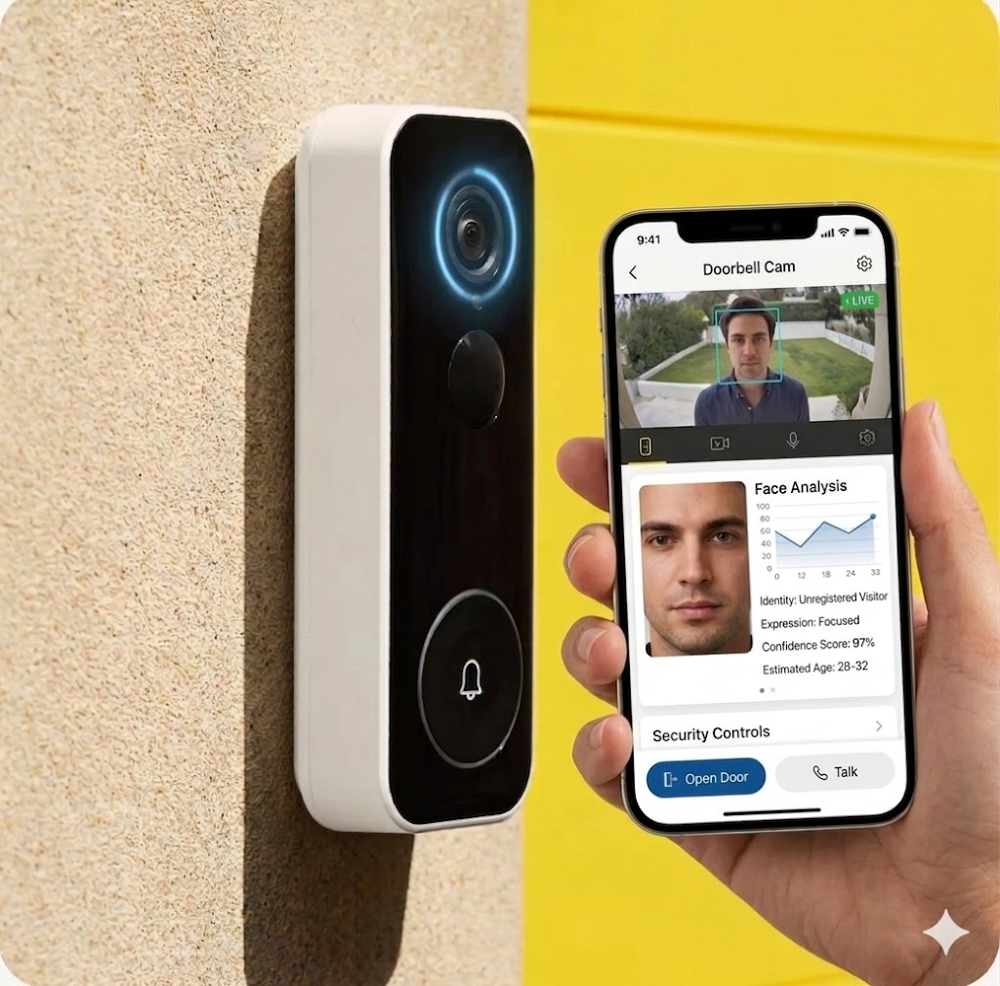

Yale's current smart doorbell requires five separate steps to let someone in: ring the bell, wait for a notification, open the app, check the video, tap unlock. For visitors, that's fine. But when you're the one standing at your own front door with shopping bags, it's a problem.
I explored how facial recognition could reduce this to a single tap — without compromising on security or privacy. This is a conceptual project. I'm not affiliated with Yale.
The current unlock flow was designed for visitors, not residents. It assumes someone inside the house is available to check video and tap unlock. When you're the one at the door, you're stuck waiting for someone else to go through five steps — or you reach for your physical key anyway.
5 steps and 30–90 seconds to enter your own home. That's the gap I wanted to close.
I spoke with 8 smart lock users — friends, family, online contacts. These were informal conversations, not formal research. Directional insights, not statistical evidence.
6 out of 8 people told me they use a physical key or PIN more than the app. The app unlock is just too slow when you're standing at the door. The "smart" part becomes the backup.
Nobody was worried about their own entry. The stress came from remote-unlocking for someone else — a delivery driver, a family member who forgot their key. That's where things felt uncertain.
Every single person rejected the idea of the door opening automatically when it recognises you. Even if the tech were perfect, it felt "wrong." People want to choose to open the door, even when the system already knows who they are.
The feeling of control matters more than the speed of entry. A confirmation tap isn't a compromise — it's the feature.
The core interaction splits into two flows depending on whether the camera recognises the person. Known faces get a shortcut. Unknown faces get the standard visitor experience.
Everyone rejected auto-unlock. The single tap preserves agency: you chose to open the door. The result is one step instead of five, with security preserved. It's faster and people feel in control.
Face data is GDPR "special category" data. All matching happens on-device using embeddings, not photos. Nothing leaves the doorbell. No cloud means no breach risk. The trade-off: only household members can be enrolled, not regular visitors.
Without it, a photo held up to the camera could trigger the unlock prompt. Depth sensing plus micro-movement analysis adds 1–2 seconds of processing time. In testing, people didn't read the pause as slowness — they read it as the system being thorough.
Perceived thoroughness, not perceived delay. The brief pause built trust instead of eroding it.
A naive implementation breaks quickly. These are the scenarios I designed for:
GDPR restricts biometric processing for minors. Solution: face recognition plus mandatory PIN. Parents set time-based entry rules through the app.
Face recognition is entirely opt-in. The PIN pad and physical key remain as parallel entry methods. No one gets locked out because they didn't enroll.
Guests get time-limited access codes through the app. Codes auto-expire and are logged. Delivery workers never trigger auto-unlock — they go through the standard video call flow.
IR LEDs handle night recognition. Below the confidence threshold, the system falls back to PIN. For emergencies: a silent alarm PIN opens the door normally while alerting emergency contacts.
This is a concept, not a shipped product. There are things I can't answer without building and testing it for real:
Would people actually enroll their faces? Even with on-device processing and no cloud, biometric enrollment is a big ask. I don't know what the opt-in rate would look like.
Does one-tap feel secure enough in context? Prototype testing in a living room isn't the same as standing at your actual front door at night. Context changes everything about how security feels.
Can doorbell hardware handle this? On-device face matching with liveness detection requires real processing power. I haven't verified whether current doorbell chipsets can support this without unacceptable latency.
Security and convenience aren't opposites. The current 5-step flow isn't actually more secure — it just feels that way because it's more effort. A face match plus a confirmation tap is faster and arguably safer than a quick video glance from across the room.
The hardest UX problems are emotional. Everyone understood auto-unlock could work technically. They still didn't want it. Designing for the feeling of control mattered more than optimising for speed.
GDPR as a design tool, not just a constraint. On-device processing, explicit consent, instant deletion. These aren't just legal requirements — they're trust-building features. Regulations pushed the design in a better direction.
I worked alone, and it shows in the research. 8 informal conversations isn't enough. A real project would need structured interviews, diverse demographics, and physical prototype testing at actual front doors.